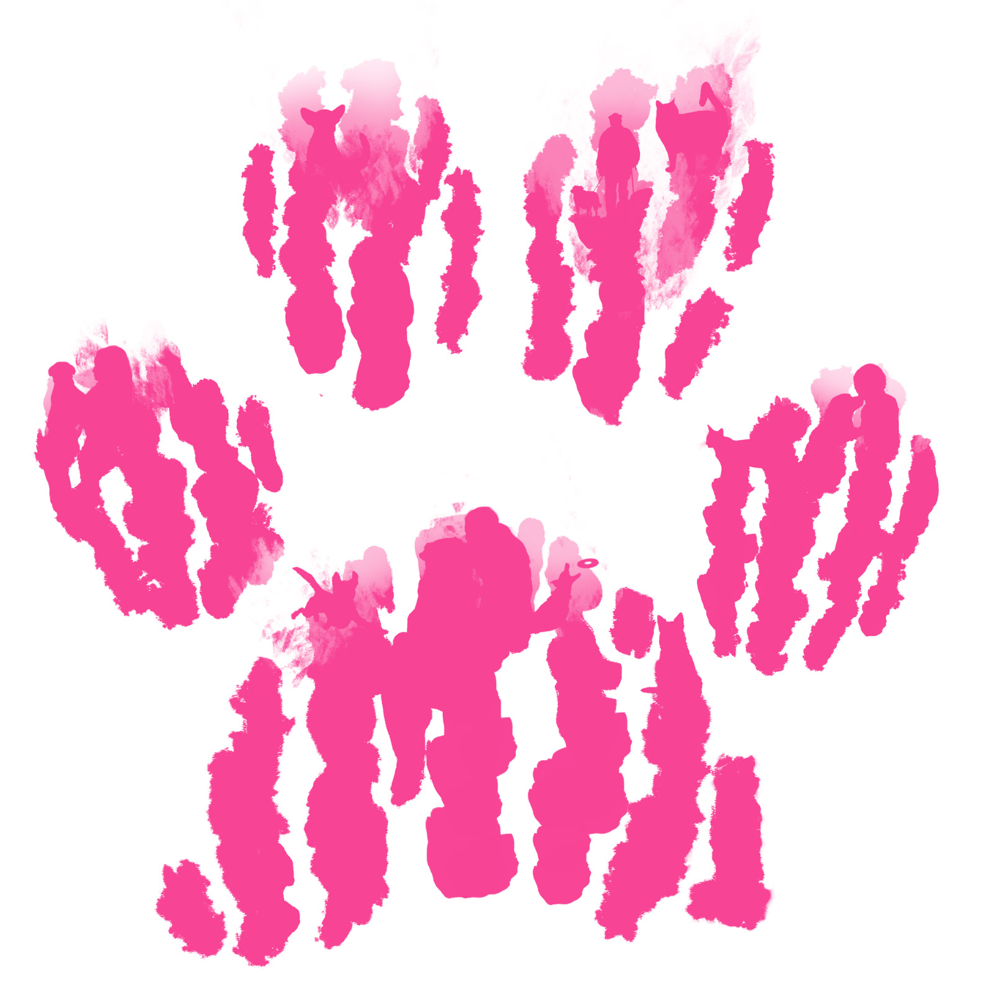
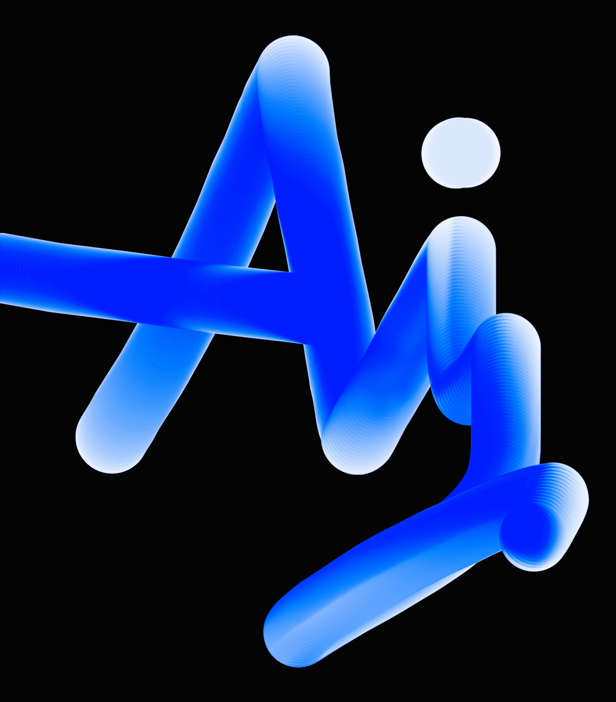

Design skaper interesse og trekker folk inn, slik at skal føle seg involvert og starte å ha samtale med andre. For vetrinær designet jeg en logo av en rosa pote. Når du ser nærmere inn i poten ser man dyret er på tur med eieren og får omsorg fra vetrinæren. Dette er livet, til dyret. Den Rosa Poten er en logo til veterinæren, for å fortelle omsorg og kjærlighet til hvert dyr.
Et annet design er logoen for Min AI. Teksten AI viser konstant utvikling, der bokstavene "AI" forsetter å bevege seg fremover for å illustrere at AI er her og nå.
